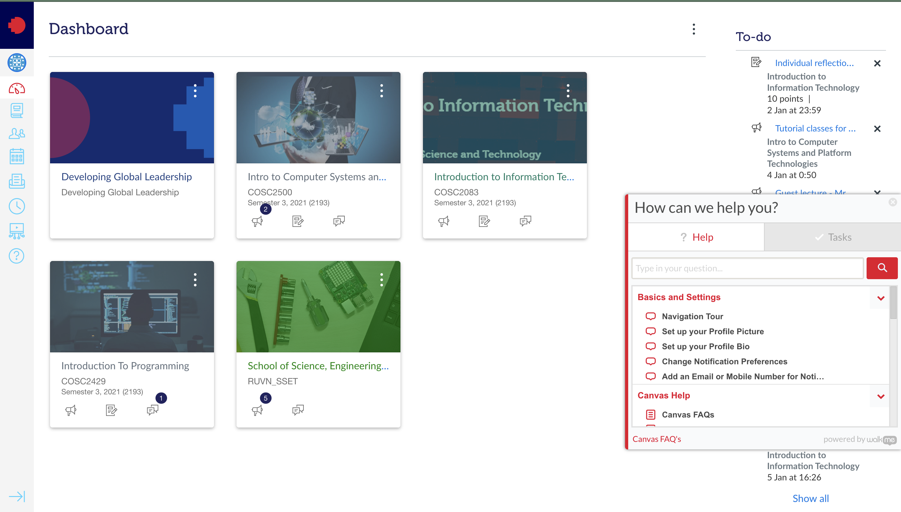

When it comes to chatbot, various companies have adopted this form of automation and successfully launched their products to the market. Services like Botsify and Walkme are potential competitors to Botto.
Compared to Botsify, the similarity between Botto and Botsify is their multiplatform, multimedia nature. Botsify is currently the best chatbot service that is fully managed in Vietnam and compared to Botto, the highlight of the Botsify Chatbot is the multiple languages its offers as well as the extra features including analytics and reporting, google sheet integration and being able to send data to Zapier webhook which put the lead in CRM instantly which is not available in Botto (Botify 2021). However, Botto is a free platform offering for RMIT students while $1490 per year would be charged if RMIT decided to go for Botsify service. The other difference is Botto focuses on education and information but Botsify is a business-oriented type which is what RMIT can consider. Botto is also highly customized for RMIT and collect insights directly from students.
Walkme, the digital adoption platform that is already implemented in RMIT Canvas FAQ in the “Need help” section, assists RMIT students with questions related to Canvas and technical issues (RMIT Canvas n.d). In this FAQ section, features are divided into 3 main parts. Requesting technical support is presented in “Canvas Help”, instructions on how to use Canvas for first-time users, like going on a Navigation Tour or setting up profile picture, will be included in“Basic and Settings” section and the set of questions and answers for Canvas tools, like assignment submission guideline, will be provided under “RMIT FAQs” (Figure 1). The similarity of Botto and Walkme is the variety of platforms and also the multimedia that converts to live conversation. According to Walkme (2021), Walkme FAQs are triggered by Launchers which this type of platform can be placed everywhere on the RMIT websites in the “Help” session while Botto is a based website platform linking with the Facebook Messenger Plugin. The CRM of Walkme is also more efficient and stable than Botto which not only reduces errors but also benefits when creating, editing leads, or project tasks (Walkme 2021). While Walkme is a good tool to provide information, Botto has its advantage in providing more information in detail, updating the latest events from school and clubs, and being more mobile friendly thanks to Messenger integration. Not a lot of RMIT population seeks help with Walkme as it may not be as convenient as going to RMIT Connect or calling for IT support and because it is purely informational. Botto, on the other hand, is created with a personality suitable for the younger generation, who prefer instant responses from their favorite platforms.
